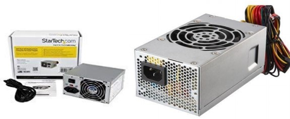

A power supply is a component that supplies power to at least one electric load. Typically, it converts one type of electrical power to another, but it may also convert different form of energy – such as solar, mechanical, or chemical - into electrical energy.
A power supply provides components with electric power. The term usually pertains to devices integrated within the component being powered.
For example, computer power supplies convert AC current to DC current and are generally located at the rear of the computer case, along with at least one fan. A power supply is also known as a power supply unit, power brick or power adapter.

Techopedia explains Power Supply Most computer power supplies also have an input voltage switch, which can be set to 110v/115v or 220v/240v, depending on the geographic location. This switch position is crucial because of the different power voltages supplied by power outlets in different countries. Most computers now use a switched-mode power supply, which changes AC current to DC voltage. This voltage can be switched on and off electronically. A switched- mode power supply can also shut itself down before damage is done when a short is detected. Most computer power supplies include a number of switched-mode supplies, which operate independently by producing a single voltage. These are linked together, so that they shut down as a group in case of a computer fault.